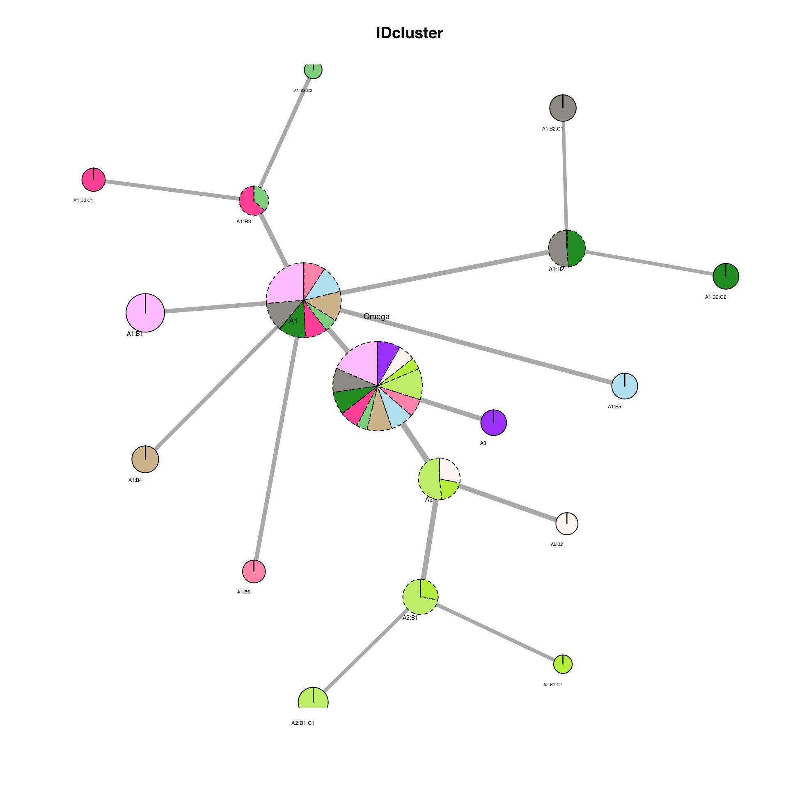

In this article, we will show how to run IDclust with your own custom functions. The two ‘hackable’ part of IDclust are the processing and the differential functions. There are a few default functions present in the package, however based on your preferences you are able to customize both step quite easily.
As an example, we will analyse a scRNA dataset with ‘monocle3’ instead of the default Seurat for preprocessing as well as differential analysis.
Data
Take example scRNA data from “Joint profiling of histone modifications and transcriptome in single cells from mouse brain,Chenxu Zhu, Yanxiao Zhang, Yang Eric Li, Jacinta Lucero, . Margarita Behrens, Bing Ren, Nature Methods, 2021 Paired-Tag”.
We load the data and transform it into a cellDataset to analyze it with ‘monocle3’.
Defining a preprocessing function
At each step of the ‘iterative_differential_clustering’ function, a cluster is re-processed. This means that the counts are re-normalized and that a new dimensionality reduction is calculated. Today we want to replace the default function by the processing used in ‘monocle3’ package.
We start by studying the ‘preprocess_Seurat’ function. It takes in entry 3 arguments:
* ‘Seurat’ - A Seurat object * ‘n_dims’ - An integer specifying the number of first dimensions to keep in the dimensionality reduction step. * ‘dim_red’ - The name of the slot to save the dimensionality reduction at each step in the reducedDimNames(scExp).
It returns a Seurat object with the cell dimensionality reduction (embedding) stored in the ‘dim_red’ slot of the reducedDimNames of the object.
We therefore define a function that process the data using ‘monocle3’ package and matches the criteria describe above. We will have to convert the object to a ‘CellDataset’ object and back to a Seurat object.
# From monocle3 tutorial -
# https://cole-trapnell-lab.github.io/monocle3/docs/clustering/
processing_monocle3 <- function(Seu, n_dims = 100, dim_red = "PCA") {
# Transform the Seurat object into CDS
gene_metadata = Seu@assays$RNA@meta.features
gene_metadata$gene = rownames(gene_metadata)
gene_metadata$gene_short_name = rownames(gene_metadata)
cds = monocle3::new_cell_data_set(expression_data = Seu@assays$RNA@counts, cell_metadata = Seu@meta.data,
gene_metadata = gene_metadata)
# Process the cds
cds <- monocle3::preprocess_cds(cds, num_dim = n_dims)
cds <- monocle3::reduce_dimension(cds, preprocess_method = dim_red, reduction_method = dim_red)
# Transform back into a Seurat object and keep the metadata
Seu = Seurat::CreateSeuratObject(counts(cds), meta.data = Seu@meta.data, assay = "RNA")
Seurat::Idents(Seu) = Seu$seurat_clusters
# Add the reduced dimension
Seu@reductions[[dim_red]] = Seurat::CreateDimReducObject(embeddings = reducedDim(cds,
dim_red), key = paste0(dim_red, "_"), assay = "RNA")
# Return the Seurat object
return(Seu)
}We can now test the function, make sure that the object returned is a Seurat object and that the embedding is present in the object.
Seu_monocle = processing_monocle3(Seu, n_dims = 100, dim_red = "PCA")
class(Seu_monocle)## [1] "Seurat"
## attr(,"package")
## [1] "SeuratObject"
Seurat::DimPlot(Seu_monocle)
Seurat::DimPlot(Seu, reduction = "pca")
Defining a differential function
We now define the differential function that will use ‘top_markers’ function from ‘monocle3’ package.
We start by studying the ‘differential_Seurat’ function. It takes in entry 3 mandatory arguments:
- ‘Seurat’ - A Seurat object
- ‘by’ - A character specifying the column of clusters to compare
- logFC.th - the log2 FoldChange threshold above which a gene is considered as significantly differential
- qval.th - the adjusted p.value threshold below which a gene is considered as significantly differential
The function returns a data.frame containing the marker genes for each cluster. It contains a ‘cluster’ column, a ‘gene’ column.
differential_monocle3 <- function(Seu, by = "IDcluster", logFC.th = log2(1.5), qval.th = 0.01) {
# Transform the Seurat object into CDS
gene_metadata = Seu@assays$RNA@meta.features
gene_metadata$gene = rownames(gene_metadata)
gene_metadata$gene_short_name = rownames(gene_metadata)
cds = monocle3::new_cell_data_set(expression_data = Seu@assays$RNA@counts, cell_metadata = Seu@meta.data,
gene_metadata = gene_metadata)
# Differential analysis the cds
res <- monocle3::top_markers(cds, group_cells_by = by, genes_to_test_per_group = 200,
verbose = FALSE)
# Rename the column concerning gene and cluster
colnames(res)[1] = "gene"
colnames(res)[3] = "cluster"
# We just use the adjusted p.value threshold
res = res[which(res$marker_test_q_value < qval.th), ]
# Return the Seurat object
return(res)
}We can now test the function, make sure that the object returned is a data.frame containing the marker genes of each cluster as well as the cluster column.
res = differential_monocle3(Seu, by = "seurat_clusters", qval.th = 0.01)
head(res)## gene gene_short_name cluster marker_score mean_expression
## 1 Adarb2 Adarb2 1 0.190743353 4.7852141
## 2 Adarb2 Adarb2 4 0.300782439 4.0572739
## 4 Flt1 Flt1 3 0.099162684 1.0071785
## 5 Erbb4 Erbb4 0 0.006797023 0.2426385
## 6 Erbb4 Erbb4 1 0.613972449 8.3738044
## 8 Slco1a4 Slco1a4 3 0.098571404 0.6867022
## fraction_expressing specificity pseudo_R2 marker_test_p_value
## 1 0.4476987 0.42605291 0.09714333 2.654011e-24
## 2 0.8035714 0.37430703 0.32395038 1.393469e-68
## 4 0.1458333 0.67997269 0.06757809 1.030568e-15
## 5 0.1624266 0.04184673 0.10082267 4.556533e-36
## 6 0.8828452 0.69544747 0.60309324 2.648137e-165
## 8 0.1302083 0.75702838 0.07556654 2.025770e-17
## marker_test_q_value
## 1 3.184814e-20
## 2 1.672163e-64
## 4 1.236682e-11
## 5 5.467840e-32
## 6 3.177764e-161
## 8 2.430924e-13Defining a differential function
We can finally use our two function to run the ‘iterative_differential_clustering’ function. To do so, we pass our monocle3 customized functions to preprocessing_function and differential_function, and we make sure the dim_red and n_dims arguments are correctly set.
We first pre-process our object with our custom function :
data("Seu")
Seu_monocle = processing_monocle3(Seu, n_dims = 100, dim_red = "PCA")
set.seed(47)
output_dir = "~/Tests/IDC_monocle/"
if (!dir.exists(output_dir)) dir.create(output_dir)
Seu_monocle = iterative_differential_clustering(Seu_monocle, output_dir = output_dir,
plotting = FALSE, saving = TRUE, n_dims = 50, dim_red = "PCA", processing_function = processing_monocle3,
differential_function = differential_monocle3, logFC.th = log2(1.5), qval.th = 0.01)A ‘IDcluster’ column was added to the object, which we can retrieve and add to the original object. We can now plot the clusters found this way on the UMAP:
Seu$IDcluster = Seu_monocle$IDcluster
Seurat::DimPlot(Seu, reduction = "umap", group.by = "IDcluster")
We can also plot the cluster network using the summary and tghe
IDC_summary = qs::qread(file.path(output_dir, "IDC_summary.qs"))
plot_cluster_network(Seu, IDC_summary = IDC_summary, color_by = "IDcluster", node_size_factor = 4,
legend = FALSE)
## IDcluster IDcluster_color
## 1 A1:B1 plum1
## 2 A1:B2:C1 ivory4
## 3 A1:B2:C2 forestgreen
## 4 A1:B3:C1 violetred1
## 5 A1:B3:C2 palegreen3
## 6 A1:B4 navajowhite3
## 7 A1:B5 lightblue2
## 8 A1:B6 palevioletred1
## 9 A2:B1:C1 darkolivegreen2
## 10 A2:B1:C2 olivedrab2
## 11 A2:B2 seashell1
## 12 A3 purple1